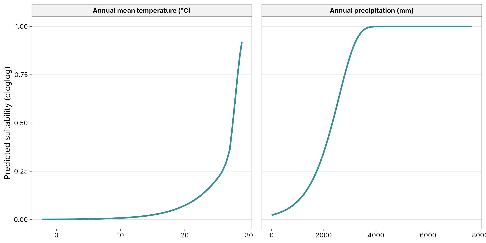
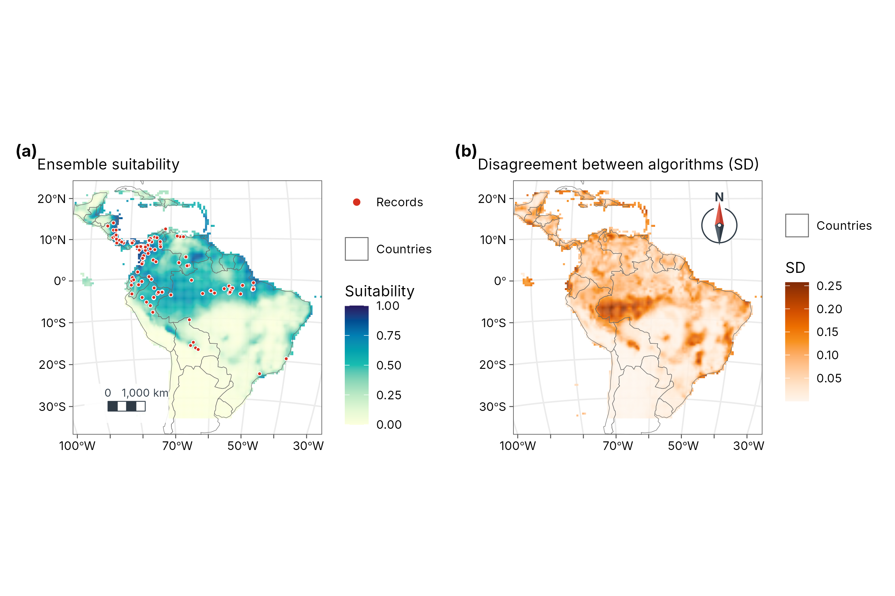

5. Species distribution models: Maxent and ensembles
guide-05-sdm.RmdThe concept
A species distribution model (SDM) relates where a species has been recorded to the environment there, then predicts how suitable every other place is. It rests on the ecological niche (Hutchinson 1957): the set of environmental conditions in which a species can persist. The model learns the niche in environmental space (temperature, rainfall, …) and projects it back into geographic space as a map.
Most records are presence-only: museum specimens, GBIF occurrences, camera-trap sightings. Absences are rarely recorded, and a missing record does not mean the species is absent. So the model compares presences with background points, a random sample of the environments available in the study region. It asks: how do the conditions at presences differ from the conditions available?
The data
116 records of the brown-throated sloth, Bradypus variegatus, and WorldClim bioclimatic variables, from the original Maxent paper (Phillips et al. 2006), shipped with the predicts package.
occ <- read.csv(system.file("ex/bradypus.csv", package = "predicts"))
climate <- terra::rast(system.file("ex/bio.tif", package = "predicts"))
climate <- climate[[c("bio1", "bio5", "bio6", "bio7", "bio8", "bio12", "bio16", "bio17")]]
climate <- terra::crop(climate, terra::ext(-95, -32, -35, 22))
set.seed(1)
bg <- suppressWarnings(terra::spatSample(climate, 10000, "random", na.rm = TRUE, xy = TRUE))
pv <- terra::extract(climate, occ[, c("lon", "lat")], ID = FALSE)
d <- rbind(pv, bg[names(climate)]) # environment at every point
xy <- rbind(as.matrix(occ[, c("lon", "lat")]), as.matrix(bg[, c("x", "y")]))
presence <- c(rep(1, nrow(pv)), rep(0, nrow(bg))) # 1 = record, 0 = background
ok <- stats::complete.cases(d)
d <- d[ok, ]; xy <- xy[ok, ]; presence <- presence[ok]
table(presence)
#> presence
#> 0 1
#> 6240 116| Variable | Meaning (WorldClim) | Units |
|---|---|---|
| bio1 | Annual mean temperature | °C × 10 |
| bio5 | Maximum temperature of the warmest month | °C × 10 |
| bio6 | Minimum temperature of the coldest month | °C × 10 |
| bio7 | Temperature annual range (bio5 − bio6) | °C × 10 |
| bio8 | Mean temperature of the wettest quarter | °C × 10 |
| bio12 | Annual precipitation | mm |
| bio16 | Precipitation of the wettest quarter | mm |
| bio17 | Precipitation of the driest quarter | mm |
1. Maxent
Theory
Maxent (Phillips et al. 2006) estimates the probability distribution of presences over the background cells that has maximum entropy (is as spread out, as uninformative, as possible) subject to one constraint: the average of each environmental feature over the predicted distribution must match its average at the presences. “Assume nothing beyond what the data show.”
This is mathematically the same as a Poisson point process model of presence intensity, and as an infinitely weighted logistic regression of presences against background (Fithian and Hastie 2013; Renner and Warton 2013). tidymapr fits it that way, as maxnet does (Phillips et al. 2017), with the lasso penalty, which shrinks unimportant features to exactly zero.
Features let the model learn non-linear responses:
| Class | Code | Shape it can learn | Example |
|---|---|---|---|
| Linear | l |
Steadily increasing or decreasing | More suitable where wetter |
| Quadratic | q |
A peak (an optimum) | Suitable at intermediate temperature |
| Product | p |
An interaction between two variables | Heat tolerated only where wet |
| Hinge | h |
A threshold, then a slope | Unsuitable below 1,000 mm, then rising |
Regularisation (regmult, default 1)
sets how strongly the lasso penalises complexity. Larger values give
smoother, more general models; smaller values fit the training data more
closely and risk overfitting.
mx <- sdm_maxent(presence, d)
mx
#> Maxent (lqph features, regmult 1): 116 presences, 6240 background points,
#> standardised predictors, 28 non-zero features of 820.
#> Features kept: linear 6, quadratic 3, product 5, hinge 14.Interpretation. Of 820 candidate features, the lasso kept 28. The rest were not needed to describe how presences differ from the background.
Why tidymapr standardises predictors
Quadratic and product features depend on where zero lies. maxnet, the R port of Maxent, builds them from the raw values, so the same climate in different units gives a different model. tidymapr rescales every predictor to 0-1 first, as the original Java Maxent does, so results do not depend on units. A test: express temperature in tenths of a kelvin instead of tenths of a degree Celsius.
temp <- c("bio1", "bio5", "bio6", "bio8")
d_kelvin <- d
d_kelvin[temp] <- d_kelvin[temp] + 2731.5 # tenths of °C -> tenths of K
change <- function(standardize) {
a <- sdm_maxent(presence, d, standardize = standardize)
b <- sdm_maxent(presence, d_kelvin, standardize = standardize)
max(abs(predict(a, d) - predict(b, d_kelvin)))
}
knitr::kable(tibble(
model = c("Raw predictors (as maxnet)", "Standardised (tidymapr default)"),
`largest change in suitability` = c(change(FALSE), change(TRUE))
), digits = 4, caption = "Changing temperature units from Celsius to kelvin: how much does predicted suitability (0-1) change?")| model | largest change in suitability |
|---|---|
| Raw predictors (as maxnet) | 0.2065 |
| Standardised (tidymapr default) | 0.0000 |
The climate is identical in both cases; only the units differ. A scientific result should not depend on that, and with standardisation it does not.
Response curves: what the model learned
A response curve shows how predicted suitability changes along one variable while the others are held at their median. It is how you explain an SDM: it describes the niche.
curve <- function(var, label, scale = 1) {
grid <- as.data.frame(lapply(d, function(x) rep(median(x), 100)))
grid[[var]] <- seq(min(d[[var]]), max(d[[var]]), length.out = 100)
tibble(value = grid[[var]] / scale, suitability = predict(mx, grid), variable = label)
}
rc <- bind_rows(
curve("bio1", "Annual mean temperature (°C)", scale = 10),
curve("bio12", "Annual precipitation (mm)")
)
ggplot2::ggplot(rc, ggplot2::aes(value, suitability)) +
ggplot2::geom_line(colour = "#349295", linewidth = 1) +
ggplot2::facet_wrap(~variable, scales = "free_x") +
ggplot2::labs(x = NULL, y = "Predicted suitability (cloglog)") +
theme_tidymapr()
Interpretation. Read each curve as “other things being equal”. Where the curve is high, conditions are like those at the records; where it is low, they are not. A curve that rises to the edge of the data means the optimum may lie outside the study region: be careful predicting there.
2. Evaluation: how good is the model?
Spatial block cross-validation
Testing a model on random held-out points flatters it: test points
sit next to training points and share their conditions (Chapter 3:
autocorrelation). Spatial block cross-validation
(Roberts et al. 2017) holds out whole regions instead, so the model is
tested on places it has not seen. sdm_ensemble() splits the
region into blocks, groups them into folds balanced for presences and
background, and fits each algorithm k times.
Metrics
| Metric | What it measures | Range | Rough guide |
|---|---|---|---|
| AUC (area under the ROC curve) | Probability that a random presence gets a higher prediction than a random background point | 0.5 = random, 1 = perfect | > 0.7 useful, > 0.8 good. Presence-background AUC cannot reach 1, because background points may be suitable |
| TSS (true skill statistic) | Sensitivity + specificity − 1, at the best threshold | −1 to 1; 0 = random | > 0.4 useful, > 0.6 good |
| Boyce index (continuous) | Do presences fall more often than expected in cells predicted as suitable? A rank correlation | −1 to 1; 0 = random | > 0.5 good. The best metric for presence-only data (Hirzel et al. 2006) |
3. Ensembles
Theory
Different algorithms make different assumptions, and no single algorithm is best for every species (Elith et al. 2006). An ensemble averages several, weighted by how well each predicted held-out regions, which reduces the risk of relying on one algorithm’s quirks (Araújo and New 2007). tidymapr combines:
| Algorithm | Type | Strength |
|---|---|---|
| Maxent | Penalised point-process model | Designed for presence-background data; smooth responses |
| GLM | Logistic regression with quadratic terms | Simple, interpretable optima |
| GAM | Logistic regression with smooth splines | Flexible curves, still smooth |
| Random forest (C++) | Many decision trees | Captures interactions and thresholds automatically |
ens <- sdm_ensemble(presence, d, coords = xy, folds = 5, ntree = 500, seed = 1)
knitr::kable(ens$summary, digits = 3, caption = "Spatial block cross-validation of each algorithm, and its weight in the ensemble.")| algorithm | auc | tss | boyce | weight |
|---|---|---|---|---|
| maxent | 0.779 | 0.532 | 0.307 | 0.241 |
| glm | 0.769 | 0.507 | 0.499 | 0.215 |
| gam | 0.784 | 0.529 | 0.589 | 0.238 |
| rf | 0.804 | 0.595 | 0.629 | 0.306 |
Interpretation. Each row is one algorithm tested on
regions it did not see. The best AUC here is 0.8 and the best TSS 0.59:
useful models, as expected for a wide-ranging species. Weights come from
cross-validated TSS, so the better algorithms count more; algorithms
below min_tss would be left out.
Suitability and disagreement
suit <- predict(ens, climate, what = "all")
world <- sf::st_read(system.file("shapes/world.gpkg", package = "spData"), quiet = TRUE)
americas <- suppressWarnings(sf::st_crop(world, c(xmin = -95, ymin = -35, xmax = -32, ymax = 22)))
records <- sf::st_as_sf(occ, coords = c("lon", "lat"), crs = 4326)
a <- geo_map(subtitle = "Ensemble suitability", crs = "laea", north_arrow = FALSE) |>
map_raster(suit[["mean"]], name = "Suitability", palette = "YlGnBu", limits = c(0, 1)) |>
map_polygons(americas, fill = NA, border = "grey40", linewidth = 0.15, label = "Countries") |>
map_points(records, preset = "sample_site", label = "Records", size = 1)
b <- geo_map(subtitle = "Disagreement between algorithms (SD)", crs = "laea", scale_bar = FALSE) |>
map_raster(suit[["sd"]], name = "SD", palette = "Oranges") |>
map_polygons(americas, fill = NA, border = "grey40", linewidth = 0.15, label = "Countries")
geo_panels(a, b, ncol = 2, guides = "keep")
How to read the two maps.
- Suitability (left) is the weighted mean of the four algorithms, from 0 (conditions unlike any record) to 1 (conditions like the core of the records). It is a relative index of environmental similarity, not the probability that the species is present: that would need data on prevalence, which presence-only records do not have.
- Disagreement (right) is the weighted standard deviation among the algorithms. Pale areas: all four agree, so the suitability is robust. Dark areas: they give different answers, often where conditions differ from anywhere the species was recorded. Treat suitability there as uncertain and a priority for field checks.
4. From suitability to a range map: thresholds
Management often needs “suitable / not suitable”. Any cut is a choice:
| Threshold | Rule | Effect |
|---|---|---|
| Minimum training presence | Lowest suitability at any record | Includes every record; generous range |
| 10th percentile training presence | Excludes the 10 % least suitable records | Robust to a few bad records; common default |
| Max sensitivity + specificity (maxSSS) | Maximises TSS | Balances omission and commission |
State the threshold and why you chose it; show the continuous map as well.
Pitfalls to check
| Problem | Symptom | Remedy |
|---|---|---|
| Sampling bias: records near roads, cities, field stations | Model maps survey effort, not the species | Thin records (geo_rarefy_spatial()), or sample
background with the same bias |
| Extrapolation to new conditions | Strong predictions in climates outside the training range; high disagreement | Restrict projections; check the disagreement map; clamping (on by
default in predict()) |
| Correlated predictors | Unstable response curves | Choose fewer, ecologically meaningful variables |
| Too few records | Weak cross-validation; erratic curves | Use fewer features (features = "lq") or a larger
regmult
|
| Bad coordinates | Records in the sea or at country centroids | Clean with geo_clean() before modelling |
How to report it
Follow the ODMAP protocol (Zurell et al. 2020). For example:
We modelled the distribution of Bradypus variegatus from 116 presence records and 6240 background points using eight WorldClim variables. We fitted Maxent (linear, quadratic, product and hinge features, regularisation multiplier 1, predictors standardised to 0-1), a GLM, a GAM and a random forest (500 trees) with tidymapr, and combined them in an ensemble weighted by the true skill statistic from five-fold spatial block cross-validation. Cross-validated AUC ranged from 0.77 to 0.8 and TSS from 0.51 to 0.59. We report the weighted mean suitability and the weighted standard deviation among algorithms as a measure of model uncertainty.
References
Araújo, M. B. and New, M. (2007). Ensemble forecasting of species distributions. Trends in Ecology & Evolution, 22, 42-47.
Elith, J. et al. (2006). Novel methods improve prediction of species’ distributions from occurrence data. Ecography, 29, 129-151.
Fithian, W. and Hastie, T. (2013). Finite-sample equivalence in statistical models for presence-only data. Annals of Applied Statistics, 7, 1917-1939.
Hirzel, A. H. et al. (2006). Evaluating the ability of habitat suitability models to predict species presences. Ecological Modelling, 199, 142-152.
Hutchinson, G. E. (1957). Concluding remarks. Cold Spring Harbor Symposia on Quantitative Biology, 22, 415-427.
Phillips, S. J., Anderson, R. P. and Schapire, R. E. (2006). Maximum entropy modeling of species geographic distributions. Ecological Modelling, 190, 231-259.
Phillips, S. J. et al. (2017). Opening the black box: an open-source release of Maxent. Ecography, 40, 887-893.
Renner, I. W. and Warton, D. I. (2013). Equivalence of MAXENT and Poisson point process models for species distribution modeling in ecology. Biometrics, 69, 274-281.
Roberts, D. R. et al. (2017). Cross-validation strategies for data with temporal, spatial, hierarchical, or phylogenetic structure. Ecography, 40, 913-929.
Zurell, D. et al. (2020). A standard protocol for reporting species distribution models. Ecography, 43, 1261-1277.